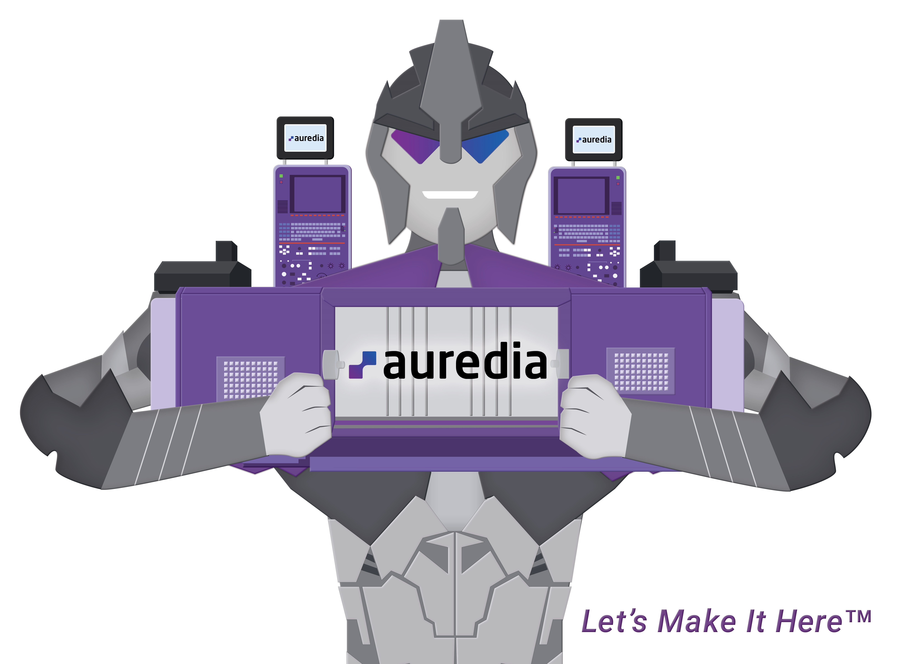
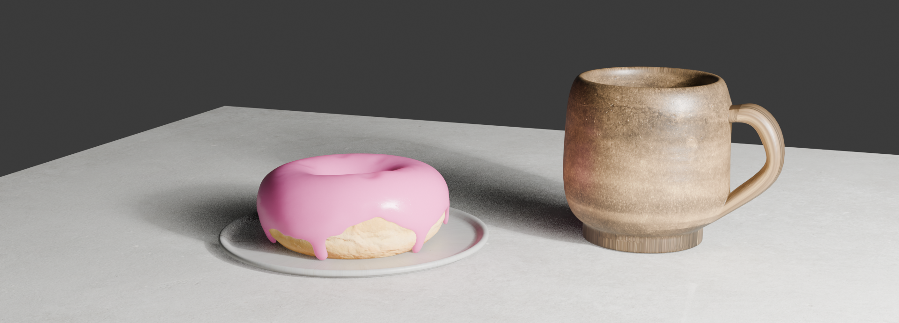
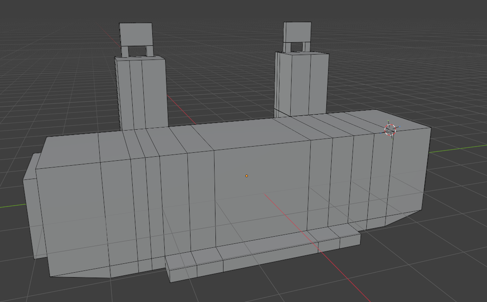
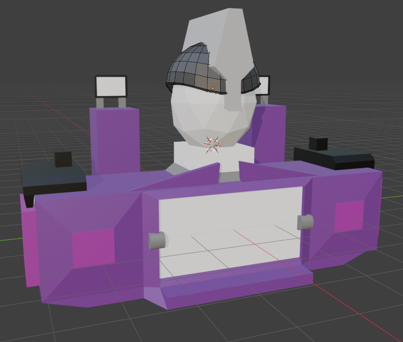
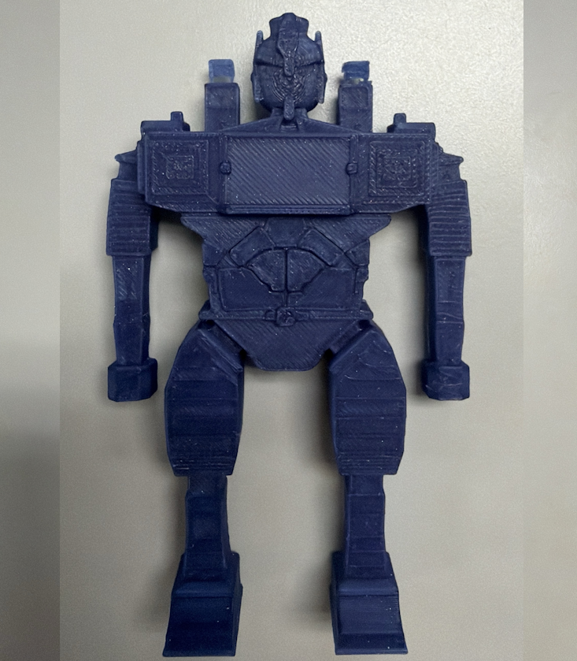
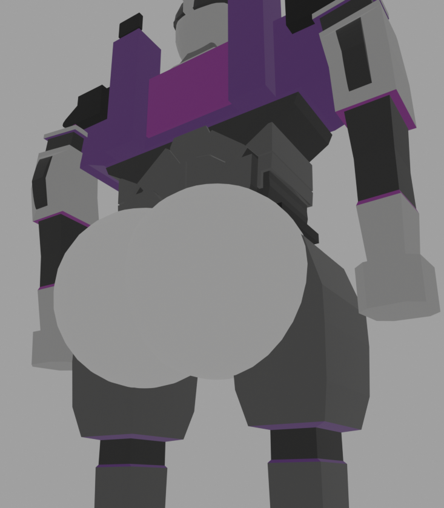

Would it be crazy to say the Backrooms movie inspired this project? The director, Kane Parsons, started his career by creating Blender shorts. This showed me the power Blender has, from being able to create such lifelike animations to any 3D print imaginable. With this inspiration, I decided to burn the next month of my life learning this tool 😎
Summer 2026 saw me intern for a startup named Auredia. Their mascot is known as Auredia Man. An illustration for Auredia Man had already been made, a robotic mascot built out of a CNC machine. Several interns attempted in the past to create it as a 3D model, but all attempts were incomplete and lost to history. Thus, I accepted this as my first deep dive into Blender.

The most common way to start learning Blender is to find Blender Guru's obligatory donut tutorial. On June 16th, I spent about 4 hours learning to use Blender's tools and creating this glorious hunk of donut seen here.

From here I struggled. I spent hours staring into the soul of the reference image – finding a way to begin this project. I tried to build the helmet, but I couldn't create a non-destructive workflow. Over the next week, I spent several minutes per day making a failed attempt at a helmet for Auredia Man. Eventually, I pivoted to something I could rap my head around – a cube. I placed a cube down and began creating the torso of Auredia Man. From here, frustration at Blender turned into passion and drive. By 6/24, a base CNC structure was created as Auredia Man's upper torso.

At this point, a new attempt at the head was needed. Working on the chest made me more familiar with Blender's tools and gave me a reference for the more complex shape. With that, the head and helmet became a survivable challenge. Here was the progress as of 6/29 (oh yea color was also added).

Now, progress has become rapid. By 7/2, I finalized the helmet, face, neck. CNC monitoring racks, torso logo, lower torso, belt/buckle, and legs. By 7/6, the arms were added, and approval was given to 3D print a rough draft. After staring at the 3D printer for 2 hours, the very first Auredia Man was conceived 🥳.


On 7/8, the final copy of Auredia Man needed to complete this project will be made. This one will use 5 filaments to generate a colorful recreation of the Blender copy.

All in all, this project lit a passion in me to learn a new skill and deliver a product from ideation to assembly. Seeing the joy across the Office at its completion was special to me, and I hope to continue creating more ambitious projects in Blender henceforth.
